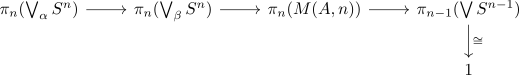

homotopy groups of a moore space
Proposition
Let $A$ be an abelian group, $n \geq 2$ and $M(A,n)$ the Moore space. Then the homotopy groups are given by
\begin{align*}
\pi_k(M(A,n),*) =&
\begin{cases}
1 & \mbox{if } k < n \\
A & \mbox{if } k = n \\
\mathrm{nontrivial} & \mbox{else } \\
\end{cases}
\end{align*}
Proof
follows from the
where any map $\bigvee S^n \rightarrow \bigvee S^n$ is \(n-1\)-connected and $\bigvee S^n$ is an \(n-1\)-connected space
Thus we have
